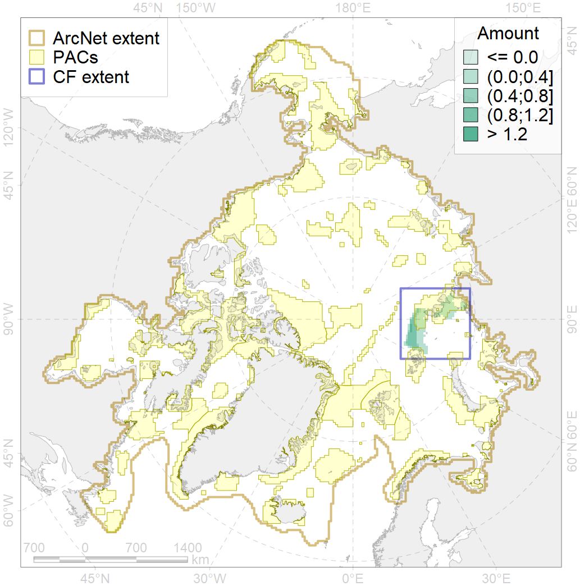
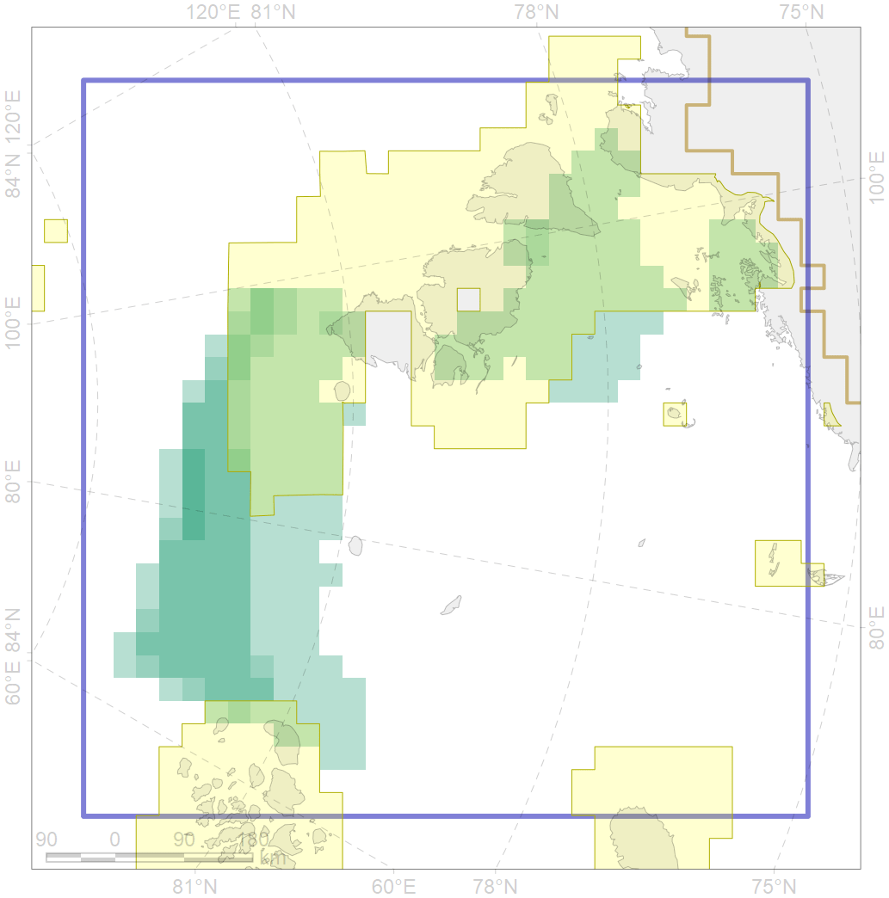

3056

| CF code | 3056 |
| CF name | Multiyear Ice distribution in September in the Kara Sea LME |
| Time Period | 1979 - 2017, adopted for recent changes |
| Source(s) | Lavielle M. 1999. Detection of multiple changes in a sequence of dependent variables. Stochastic Processes and their Applications, 83(1): 79–102. doi:10.1016/S0304-4149(99)00023-X. |
| Seasonality | September |
| Depth Horizon | Sea level (0m) |
| Methodology | Lavielle M. 1999. Detection of multiple changes in a sequence of dependent variables. Stochastic Processes and their Applications, 83(1): 79–102. doi:10.1016/S0304-4149(99)00023-X. |
| Use Restrictions | Joined terms of data licenses, copyrights, restrictions, terms of use, disclaimers, etc. No additional terms from data contributor. |
| Author Name | Nikita Platonov |
| Notes | |
| Scenario’s Target | 0.18 |
| Target Achievement | 0.234 (Scenario: 130.3%) |
| PAC | Share of the Total Amount within the PAC | Share of the Target Achievement for the ArcNet | PAC’s Contribution to the Target Achievement |
|---|---|---|---|
| 14 | 23.4%26.6% | 100.5%104.7% | 77.1%80.4% |
| 22 | 1.5% | 8.4% | 6.5% |
| inner | 24.9%28.1% | 108.9%113.1% | 83.6%86.8% |
| outer | 75.1%75.5% | 21.3%22.0% | 16.4%16.9% |
| † supplement values are for area consistence whereas principal values are for Accenter compatible gridded stats |